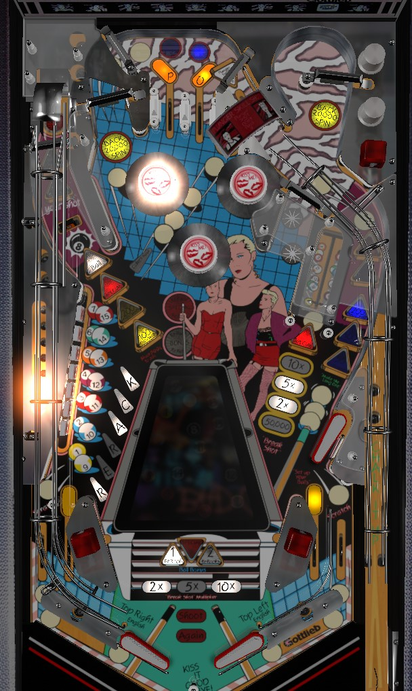

Try to always be in multiball. Hit the 8 ball drop target in the upper left to reveal the lock, then shoot the lock to start multiball. Always hold the left flipper up at the start of multiball because the ball is kicked out incredibly fast. In multiball, shoot the spinners (just to the right of the 8 ball lane, or just to the left of the vary target) for 20,000 points per spin. Left drop targets increase base bonus, full shots to the vary target increase multiplier, clearing the left drop targets starts the Rerack mode which is a hurry-up where you try to hit all 6 of the exposed standup targets behind the drops.
The skill shot is a precise power plunge that triggers the rollover switch underneath the red Plunger Skill Shot arch, then rolls back down the right orbit instead of advancing to the top lanes. A successful skill shot scores 100,000 points plus the award listed on the alphanumeric display.
In most cases, the skill shot will be Lights Lock, which automatically lowers the 8 ball target; in this case, a successful skill shot followed by a well timed upper right flipper shot can put the ball into the lock saucer in the upper left, effectively earning multiball off the plunge.
If lock was lit on a previous ball but not collected, the lock will be available at the start of the next ball; in this case, since there's no need to light the lock, the skill shot will award Flashes Pops, which qualifies this game's ridiculously difficult jackpot.
If the ball being plunged is the second ball in a 2-ball multiball, the skill shot will spot one pool ball from the left drop targets.
Each drop target down in the left bank scores 5,000 points and awards a pool ball. Pool balls are worth 5,000 points to the base bonus at the end of the ball. Completing the bank of all 7 drop targets instantly awards one Rack, which is worth 50,000 points in bonus and is carried over across future balls (whereas the bonus from individual pool balls is not). Once all 7 drop targets are knocked down, hit the 8 ball target in the upper left to begin Rerack mode. Rerack mode is a hurry-up that starts at 1,000,000 points in single ball play or 3,000,000 points if multiball is running where the object is to hit all 6 of the standup targets on the left, which are now revealed since the drop targets are down. The first 5 Rerack targets hit each add 500,000 points to the hurry-up increasing its value and/or buying a little more time. The 6th Rerack target completes the mode and scores the remaining value. If the hurry-up runs out of points or if Rerack is completed, the drop targets will be raised and another rack can be worked on. Up to 3 completed racks can be stored; after that, completing the left drop targets scores a Special.
Hit the 8 ball target at any time to open the Lock in the upper left of the playfield. Shoot into the lock to start multiball. The 8 ball target and lock can be shot from either right flipper. When a ball is locked, a second ball is fed to the plunger lane, and the locked ball will be kicked out as soon as the second ball hits any playfield switch. As you plunge the second ball, always hold up the left flipper. The kickout from the lock is very fast and if you do not hold the left flipper up, the ball will be in the center drain before you even realize it got kicked out.
During multiball, the spinners- one to the right of the 8 ball lane that feeds the top lanes, and one to the left of the vary target that makes a loop and feeds the upper right flipper- are lit for 20,000 points per spin instead of their usual value of 1,000 per spin. These are massive points and should be the only thing intentionally shot for during multiball. If you happen to start Rerack along the way, it may be worth shifting your focus there since Rerack starts at 3,000,000 instead of 1,000,000 during multiball, but I would still stick to spinners, since a very strong spinner shot can score 1,000,000 points on its own.
Hit the right orbit to score and advance the lit value. The orbit scores just 5,000 points if nothing is lit; then, the progression goes 50,000 - 100,000 - 250,000 - extra ball (1st time on a ball) or special (thereafter). The right orbit value is collected at the switch under the red arch that judges the skill shot; it is sometimes possible to get credit for 2 right orbits if the ball does not make it all the way to the top lanes and rolls back down across this switch. Once the extra ball or special is collected, the right orbit is completely unlit and the progression begins again.
The two top lanes and two in lanes each award a letter in the word Pool. Roll through a lit lane to unlight it. Flipper lane change is NOT available with these lanes; rather, the position of the lit lanes rotates every time a pop bumper is triggered. All Pool lanes have a base value of 5,000 points. Unlighting all 4 lanes to spell Pool increases the value of the 8 ball target, in the sequence 100,000 - 200,000 - special. Collecting the special unlights the point values at the 8 ball target and resets the sequence.
Partial shots to the vary target give minor points; I haven't bothered to figure out how many, or if there are different amounts of points for different shot strengths. The preferred outcome from the vary target is always a full shot. Full shots to the vary target score 2x bonus, then 5x bonus, then 10x bonus, then special; anything after that scores 50,000 points. Shots to the vary target are high risk-high reward, and are worth the highest potential payoff once more than one rack has been completed.
Pop bumpers score 1,000 points. A saucer near the upper right bumper that can only be accessed with nudging and pop bumper luck scores the entire current end of ball bonus, including multiplier, and does not reset any part of it.
Every 40 switch hits anywhere on the table, a very distinctive "bwohm" sound will play, and the bumpers will start flashing. If the next 8 switch hits made after this sound plays are all pop bumpers, the Jackpot is scored. Hitting any other switch in the meantime cancels the Jackpot chance. The Jackpot starts at 250,000 points, and as far as I know, the only way to raise it is when a ball goes down either out lane: this adds 150,000 to the jackpot. The jackpot is progressive and carryover, meaning it builds across players and games until collected or until the game is powered off. The jackpot is too inconsistent and difficult to go for at basically any value and this feature is best ignored.
If a player's score is very low (less than 200,000) at the start of their final ball, the left top lane and right orbit will be lit for 100,000 points for free. An operator setting can adjust this to light the right top lane and right orbit for 250,000 points instead, or disable this feature entirely.
Also, if a player with a very low score drains down the middle on the final ball of their game, they receive a Scratch award, which can be equal to 500,000 points or a compensation extra ball.
If all 4 specials in the game are lit at once, 3 replays are instantly scored. I do not know if this counts as an instant 1,500,000 points in competition/novelty play, where specials score 500,000 points. As a reminder, the 4 specials are:
Bad Girls has a conventional in/out lane setup. In lanes score 5,000 points and award the second O (left) and the L (right) in Pool respectively. Out lanes score 50,000 points and add 150,000 points to the jackpot. There is a center peg between the flippers, but it is frequently too low, too small, and not bouncy enough to be helpful.
End of ball bonus is 50,000 points for each completed rack, plus 5,000 points for each collected pool ball, all times the bonus multiplier. Up to 3 racks can be held at once, so max bonus is 10x 150,000 = 1,500,000 points before the extra pool balls on rack 4+ are considered. Completed racks are carried over from ball to ball, but individual remaining pool balls are not. Bonus multiplier is never carried from ball to ball. Bonus can be collected mid-ball at the very awkward to find saucer near the upper right pop bumper.
In competition/novelty play, extra balls and specials both always score 500,000 points.